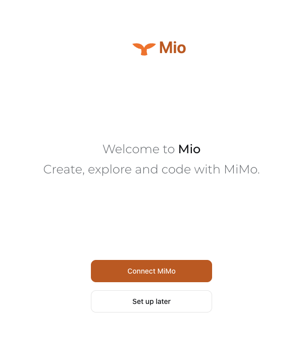
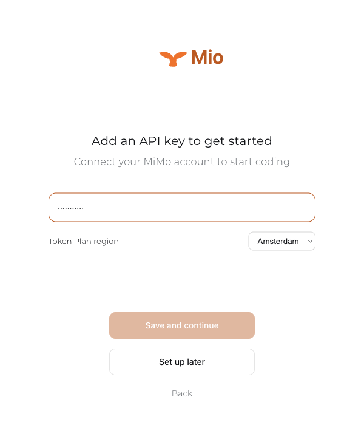
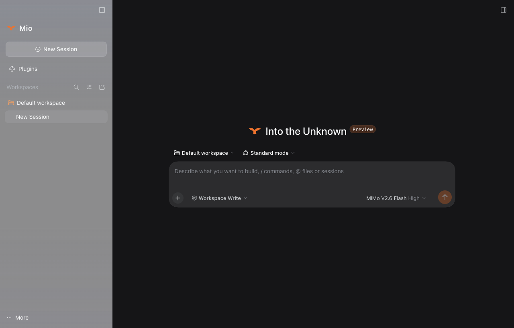

Official dsh Desktop 0.1.7-rc.2
Upstream's native workspace, settings and tools. Version-pinned, patches reviewed, no fork.
鲸为心，MiMo 为身。
Mio is a native desktop coding agent for MiMo. Since 0.4.0 its heart is the official DeepSeek Harness Desktop, and its body is the MiMo model family.
换了心脏，还是那头鲸。
The workspace, settings, tools and sessions are the official dsh Desktop, as upstream ships them. Mio adds one reviewed layer on top: its brand, the MiMo configuration, and native account setup.
Upstream's native workspace, settings and tools. Version-pinned, patches reviewed, no fork.
V2.6 Pro is one click away. Thinking switches per session, and requests only send thinking.type.
sk- keys are pay-as-you-go; tp- keys are token plans with a region: CN, SGP or AMS.
macOS installers are signed and notarized; every installer ships with SHA-256 checksums and qualification evidence.
15 秒，连上 MiMo。
Connect your account on the welcome screen, paste a key, pick a region, and start coding.



A walkthrough composed from real Mio 0.4.0 screens.
两副身躯，一个开关。
The everyday body: fast, economical, with thinking on by default.
For harder work: cross-file refactors and long debugging chains.
Flip it: one field changes in the request, and the whale swarm changes with it.
{
"model": "mimo-v2.6-flash",
"thinking": { "type": "enabled" },
"max_completion_tokens": 32768
}
Try a prefix. This page reads it locally; nothing is stored or sent.
MIO = MIMO × Harness
What beats below is a whale. DeepSeek Harness makes models, tools and sessions plugins; Mio pins an upstream version, adds one reviewed layer, and configures MiMo through dsh's own provider. When upstream improves, Mio moves a version pin.
带一头鲸回水面。
SHA256SUMS.txt; qualification.json records each installer's source commit and signing state.Mio is a free, MIT-licensed native desktop coding agent for the MiMo model family, for macOS and Windows. Since 0.4.0 it is the official DeepSeek Harness Desktop — upstream's workspace, tools and settings — with Mio's identity and MiMo defaults layered on top.
The hard parts of a desktop agent — the tool loop, session persistence, model routing, the workspace UI — already exist in dsh, and they are open source. Mio composes them instead of forking them: a pinned upstream source, a reviewed overlay, and MiMo configured through dsh's own provider. Upstream improvements arrive by moving a version pin.
No. DeepSeek Harness is DeepSeek's open-source agent harness (MIT). Mio is an independent project built on it and is not a DeepSeek product.
MiMo V2.6 Flash, the default for new sessions, and MiMo V2.6 Pro. Thinking switches on or off per session; Off and High map to MiMo's thinking switch, with no graded effort levels. UltraSpeed is an opt-in build flag for accounts that support it.
macOS on Apple Silicon and Intel, Developer ID signed and notarized, and Windows x64, unsigned in 0.4.0. Linux will follow separately. There is no terminal (TUI) version planned.
No. 0.4.0 starts with a fresh data directory and does not import earlier sessions, workspaces, settings or keys. Install it manually and reconnect your MiMo account on the welcome screen.
No. Mio is an independent, community-maintained project. It is not affiliated with, sponsored by, or endorsed by Xiaomi Inc., and it connects to the MiMo model platform purely as a third-party client.
The app is free and MIT-licensed; you pay only for MiMo API usage. Download the installer, then paste a MiMo API key from platform.xiaomimimo.com on the welcome screen: sk- keys are pay-as-you-go, tp- keys are token plans and ask for a region. You can skip that step and add the key later from the Models page.
身在水面，心在深海。
↑ Resurface